전파전자통신기능사 (2017-03-04 기출문제)
1과목: 임의 구분
1. 89.1 [MHz] 의 반송파를 최대주파수편이 100[KHz], 신호파 10[KHz]로 FM 변조했을 경우 변조지수 (mf) 는?
- 0.1
- 0.89
- 8.9
- 10
(정답률: 64%)

2. FS 통신방식에서 f1 주파수가 100 [kHz], f2 주파수가 200 [kHz]일 때 주파수 편이는(Δf)는?
- 50[kHz]
- 100[kHz]
- 150[kHz]
- 300[kHz]
(정답률: 37%)
3. 다음 중 정보 비트의 전송률이 일정하다고 할 때 채널 대역폭이 가장 좁은 변조방식은 어느 것인가?
- 2진 ASK
- 4진 FSK
- QPSK
- 8진 QAM
(정답률: 80%)
4. C급 전력증폭기에서 공진회로의 Q가 무부하시 300, 부하시 150이라 할 때 공진 효율 [n]은?
- 0.5
- 0.8
- 0.9
- 1
(정답률: 74%)
5. 어떤 전송시스템에서 코드효율이 1이고, 전송효율이 0.8일 때 전체효율은?
- 1.8
- 1
- 0.8
- 0.2
(정답률: 86%)
6. 주파수가 3[MHz]인 전파의 파장은?
- 1[m]
- 10[m]
- 100[m]
- 1,000[m]
(정답률: 63%)
7. 다음 중 단파 통신의 특징으로 거리가 먼 것은?
- 원거리 및 지향성 통신이 가능하다
- 원거리 통신을 위해 대전력이 요구된다
- 불감지대가 나타난다
- 전리층 밀도의 변화에 따라 도약거리가 변화한다
(정답률: 62%)
8. 송신 안테나의 높이가 100[m]이고, 수신 안테나의 높이가 100[m]일 때, 실제 전파의 가시거리는 약 얼마인가?
- 41 [km]
- 51 [km]
- 61 [km]
- 82 [km]
(정답률: 76%)
9. 주파수대에 따른 주파수의 파장이 옳은 것은?
- 장파: 50[km]~100[km]
- 중파: 1[km]~10[km]
- 단파: 10[m]~1[km]
- 초단파: 1[m]~10[m]
(정답률: 73%)
10. 다음 중 단파용 안테나에 속하지 않는 것은?
- 반파장 다이폴 안테나
- 역 L형 안테나
- 롬빅 안테나(Rhombic) 안테나
- 빔 안테나
(정답률: 77%)
11. 다음 중 파장이 짧아 고유 파장의 안테나를 얻기 쉬운 것은?
- 장파대 안테나
- 장 중파대 안테나
- 초단파대 안테나
- 초장파대 안테나
(정답률: 88%)
12. 다음 GMDSS 무선설비 중 해사안전정보를 수신할 수 있는 설비가 아닌 것은?
- INMARSAT EGC
- COSPAS-SARSAT
- HF NBDP
- NAVTEX
(정답률: 73%)
13. 해사위성통신에 제공되는 위성은 적도 상공 약 36,000[km]의 고도를 유지해야 하는데 이에 대한 이론적 배경으로 가장 적합한 것은?(오류 신고가 접수된 문제입니다. 반드시 정답과 해설을 확인하시기 바랍니다.)
- 케플러 법칙
- 만유인력의 법칙
- 맥스웰의 법칙
- 플레밍의 법칙
(정답률: 68%)
14. 다음 중 INMARSAT 표준-B형과 표준-C형의 비교로서 틀린 것은?
- 표준-B는 지향성 공중선을 사용하고 표준-C는 무지향성 공중선을 사용한다.
- 표준-B는 선박의 모션(motion)에 밀접한 관계가 있지만, 표준-C는 그렇지 않다.
- 표준-B 및 표준-C 모두 전화 및 텔렉스 통신을 할 수 있다.
- 표준-B는 직접통신이 가능하지만, 표준-C는 STORE/FORWARD 방식에 의한다.
(정답률: 72%)
15. 선박지구국에서 사용하는 송신시스템의 EIRP가 의미하는 것은?
- 평균복사전력
- 유효 복사전력
- 출력관의 등가전력
- 등가 등방성 복사전력
(정답률: 69%)
16. 1[W]는 몇 [dBm] 인가?
- 0[dBm]
- 10[dBm]
- 20[dBm]
- 30[dBm]
(정답률: 68%)
17. 다음 중 변조기의 일그러짐율(Distortion Factor)을 바르게 나타낸 것은?
- 신호 및 잡음과의 비
- 반송파의 기본파와 고조파의 비
- 변조된 가청주파수 출력의 기본파와 고조파와의 비
- 변조에 사용되는 가정주파 전압과 출력전압과의 비
(정답률: 66%)
18. 납축전지 1 개당 규정전압은 약 얼마인가?
- 1.5 [V]
- 2 [V]
- 3 [V]
- 4 [V]
(정답률: 58%)
19. 다음 무선 수신기의 성능 항목 중 전원전압의 변동과 관련이 없는 사항은?
- 선택도
- 이득
- 감도
- 잡음
(정답률: 50%)
20. 다음 중 인말새트(Inmarsat) C형에 해당하는 설명으로 옳은 것을 모두 고른 것은?
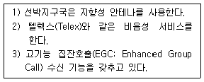
- 1, 2
- 2, 3
- 1, 3
- 1, 2, 3
(정답률: 58%)
2과목: 임의 구분
21. 다음 문장의 밑줄 부분에 들어갈 적당한 문장은?
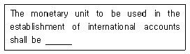
- either the monetary unit of the IMF or the U.S. Dollar
- either the monetary unit of the IMF or the Gold Franc.
- either the monetary unit of the IMF or the local money
- either the monetary unit of the IMF or the U.K. Pound
(정답률: 73%)
22. 다음 문장의 괄호 안에 가장 적합한 것은?
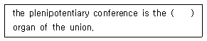
- top system
- structure
- supreme
- council
(정답률: 76%)
23. 다음 설명하는 용어의 정의로 적절한 것은?
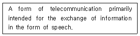
- Telegraphy
- Telephony
- Telecommunication
- Telegram
(정답률: 80%)
24. 다음 문장에 대한 국역으로 가장 적절한 것은?
- 귀선은 입항했습니까?
- 귀선은 출항했습니까?
- 귀국은 착륙했습니까?
- 귀국은 이륙했습니까?
(정답률: 77%)
25. 문맥상 괄호 안에 들어갈 가장 적절한 단어는?
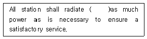
- sorry
- or
- without
- only
(정답률: 78%)
26. 다음 문장의 밑줄 친 부분과 뜻이 가장 가까운 것은?
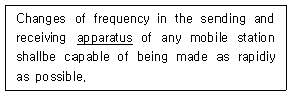
- Status
- Tool
- Equipments
- Machine
(정답률: 75%)
27. What is the safety signal used in radiotelephony?
- SECURITE
- PAN PAN
- XXX
- TTT
(정답률: 79%)
28. 다음 문장의 괄호 안에 가장 적합한 것은?
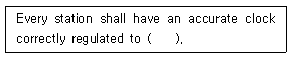
- UTC
- KST
- ITU
- KMT
(정답률: 75%)
29. 다음 문장에서 괄호 안의 용어가 순서대로 옳게 나열된 것은?
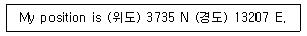
- equator, magnet
- latitude, longitude
- tropics, frigidity
- capricorn, cancer
(정답률: 82%)
30. 다음 무선전화 절차용어의 설명 중 틀린 것은?
- Roger : 당신의 송신을 수신했고 이해했다.
- Stand by : 잠시 기다리시오.
- Wait out : 끝내시오.
- Go ahead : 보내 주시오.
(정답률: 76%)
31. 다음 무선전화 메시지를 나타내는 약어로 옳은 것은?
- VERIFY
- ACKNOWLEDGE
- CORRECTION
- INTERROGATORY
(정답률: 84%)
32. 다음 중 전송할 숫자의 발음이 음성통화표에 맞게 되어있지 않는 것은?(오류 신고가 접수된 문제입니다. 반드시 정답과 해설을 확인하시기 바랍니다.)
- 9 : NO-VAY-NINER
- 0 : NAR-SOH-ZAY-ROH
- 4 : KAR-TAY-FOWER
- 8 : OK-TOH-AIT
(정답률: 67%)
33. 다음 문장의 괄호 안에 들어갈 적당한 단어는?
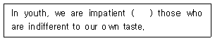
- to
- of
- as
- in
(정답률: 57%)
34. 다음 문장을 영역할 경우 괄호 안에 들어갈 적당한 단어는?
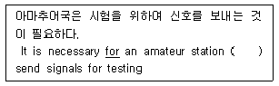
- as
- to
- for
- of
(정답률: 82%)
35. What is the dedicated equipment that is primarily used worldwide for the dissemination of weather charts and forecasts to ship at sea?
- Radiofax
- WIFI
- PSDN
- PSTN
(정답률: 74%)
36. 다음은 표준주파수 및 시보국이다. 나라명과 무선국명이 맞지 않는 것은?
- France – Nauen
- Canada – Ottawa(CHU)
- Australia – Lyndhurst, Victoria(VNG)
- Hong Kong – Cape D’Aguilar Radio(VPS)
(정답률: 70%)
37. 입항시간을 나타내는 약어는?
- KST
- UST
- ETD
- ETA
(정답률: 78%)
38. 다음 문장에서 밑줄 친 it에 해당되는 것은?
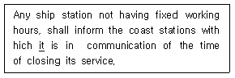
- any ship station
- working hours
- coast station
- communication
(정답률: 64%)
39. 다음 중 문장을 가장 바르게 영역한 것은?
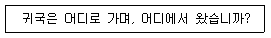
- What is the name of your vessel?
- How far approximately are you from my station?
- Where are you bound for and where are you from?
- Does my frequency vary?
(정답률: 85%)
40. 다음 중 VHF무선전화로 조난신호를 전송하고자 할 때 사용하는 용어는?
- MAYDAY
- PAN PAN
- SECURITE
- DANGER
(정답률: 83%)
3과목: 임의 구분
41. 주어진 발사종별의 전파에 대하여 특정한 조건하에서 사용되는 통신방식에 필요한 전송 속도와 품질로 정보를 전송하는데 충분한 주파수대폭을 무엇이라 하는가?
- 점유주파수대폭
- 스퓨리어스대폭
- 필요주파수대폭
- 특성주파수대폭
(정답률: 80%)
42. 방송법에 의한 방송사업을 위하여 이용하는 방송용 주파수의 관리는 어느 기관에서 수행하는가?
- 미래창조과학부
- 중앙전파관리소
- 방송통신위원회
- 한국방송공사
(정답률: 76%)
43. 특정한 주파수의 용도를 정하는 것을 무엇이라고 하는가?
- 주파수 분배
- 주파수 할당
- 주파수 지정
- 주파수 사용승인
(정답률: 63%)
44. 인공적인 유도 없이 공간에 퍼져 나가는 전자파로서 국제전기통신연합이 정한 범위내의 주파수를 무엇이라고 하는가?
- 무선
- 송신설비
- 전파
- 주파수
(정답률: 88%)
45. 다음 중 미래창조과학부가 전파이용의 촉진과 전파와 관련된 새로운 기술의 개발 및 전파 방송기기 산업의 발전 등을 위한 전파진흥기본계획을 세울 때 의무적인 사항이 아닌 것은?
- 새로운 전파자원의 개발
- 우주통신의 개발
- 해양통신의 개발
- 전파환경의 개선
(정답률: 67%)
46. 다음 중 미래창조과학부가 이용기간이 끝난 주파수를 이용기간이 끝날 당시의 주파수 이용자에게 재할당을 할 수 있는 경우는?
- 주파수 이용자가 재할당을 원하는 경우.
- 해당주파수를 국방 및 조난 구조용으로 사용할 필요가 있는 경우
- 국제전기통신 연합이 해당 주파수를 다른 업무 또는 용도로 분배한 경우
- 해당 주파수를 치안용으로 사용할 필요가 있는 경우
(정답률: 75%)
47. 다음 중 심사에 의한 주파수 할당 시 심사하여야 할 사항이 아닌 것은?
- 신청자의 재정적 능력
- 신청자의 기술적 능력
- 신청자의 사회적 역량
- 전파자원 이용의 효율성
(정답률: 80%)
48. 다음 중 비상통신으로 볼 수 없는 것은?
- 천재의 예보에 관한 통보
- 인명구조에 관한 통보
- 전력설비의 수리,복구에 관한 통보
- 선박 및 항공기의 조난에 관한 통보
(정답률: 77%)
49. 다음 중 비상위치지시용 무선표지설비의 기능 확인 방법으로 잘못 설명된 것은?
- 접지선의 길이는 휴대성을 감안하여 1[m] 이내로 구성하고, 바다에 투하시켰을 때 수면에 부상하는 지를 확인한다.
- 건전지를 사용하는 것은 건전지 유효기간이 경과되지 않은 지를 확인한다.
- 케이스, 전원 스위치 , 공중선 단자 등이 해수로부터 방수되지 않아 부식 또는 파손될 우려가 없는 지를 확인한다.
- 호출부호, 전원개폐, 기타 사용방법 및 주의 사항등이 잘 보이는 곳에 표시되어 있는지를 확인한다.
(정답률: 78%)
50. 다음 중 적합인증 대상기자재가 아닌 것은?
- 전계강도 측정기
- 무선호출국용 무선설비의 기기
- 라디오부이의 기기
- 주파수공용무선전화장치
(정답률: 75%)
51. 다음 중 무선국에 배치할 수 있는 무선종사자는?
- 미성년 후견인
- 형벌 중 내란의 죄를 범하여 형을 선고받고 그 집행이 끝나고 5년이 지나지 아니한 자
- 전파법을 위반하여 금고 이상의 형을 선고 받고 그 집행이 끝난 후 2년이 지난 자
- 국가보안법을 위반하여 금고 이상의 형을 선고받고, 그 집행을 받지 아니하기로 확정된 후 5 년이 지나지 아니한 자
(정답률: 79%)
52. 다음 중 전파법의 벌칙에 대한 규정이 다른 것은?
- 안전통신을 발신하여 할 사태에 이르렀는데도 그 선장이나 기장이 필요한 명령을 하지 아니란 자
- 조난통신을 발신하여야 할 사태에 이르렀는데도 그 선장이나 기장이 필요한 명령을 하지 아니한 자
- 무선통신업부에 종사하는 자로서 조난통신을 수신하고도 그 조난 통신의 조치를 하지 아니한 자
- 운영 정지된 무선국을 운용한 자
(정답률: 81%)
53. 국제전기통신연합의 소재지는?
- 프랑스
- 러시아
- 스위스
- 미국
(정답률: 86%)
54. 다음 중 ITU의 기본구조와 정신에 관한 헌장의 주요 내용에 포함되지 않는 것은?
- 연합의 기능에 관한 기타규정
- 전기통신에 관한 일반 규정
- 전기통신업무 운용에 관련된 각종규정
- 전파통신에 관한 특별규정
(정답률: 45%)
55. ITU에서 전파규칙(Radio Regulation)의 제개정을 하는 곳은?
- 사무총국
- 세계전파통신회의
- 전기통신개발국
- 전기통신표준화국
(정답률: 75%)
56. 선박국과 국제 텔렉스망의 가입자 간에 MF 및 HF대를 사용하는 무선 텔렉스(TELEX)는?
- 디지털 선택 호출 장치
- 협대역 직접 인쇄 전신
- INMARSAT 시스템
- 수색구조용 레이다 트랜스폰더
(정답률: 48%)
57. 비밀이 누설되는 경우 국가안전보장에 막대한 지장을 초래할 우려가 있는 비밀은?
- 1급 비밀
- 2급 비밀
- 3급 비밀
- 대외비
(정답률: 78%)
58. 통신보안이란 무엇인가?
- 통신소의 위치를 탐지하는 것이다
- 통신내용을 감청 분석하는 것이다
- 통신내용의 누설을 방지하는 것이다
- 통신내용을 획득하는 것이다
(정답률: 85%)
59. 다음 통신시설의 보호구역 중 통제구역에 대한 정의로서 가장 적절한 것은?
- 비인가자의 출입이 금지되는 보안상 극히 중요한 구역
- 비인가자의 접근을 방지하기 위해 출입 안내가 요구되는 구역
- 통신시설 등을 보호하기 위해 경비원에 의해 일반인의 감시가 요구되는 구역
- 주요통신시설에 대하여 모든 출입구역이 금지되는 구역
(정답률: 69%)
60. 통신보안 위규사항 중 불온통신에 해당되지 않는 사항은?
- 북한 통신소와의 교신사항
- 국내 침투 간첩과의 교신사항
- 적성국 통신소와의 교신사항
- 기타 국가 시책에 반대하는 내용의 교신사항
(정답률: 72%)